Rendering correction after approved cefa6983. No mainnet deployment. Report · Metrics/allocation/memory · Checks · Guarded release plan
Stress pairs use identical pinned state, camera centre (500,500), zoom and viewport. Ownership is explicitly synthetic (50k exceeds production wire cap). No live authentication claim applies to stress images.
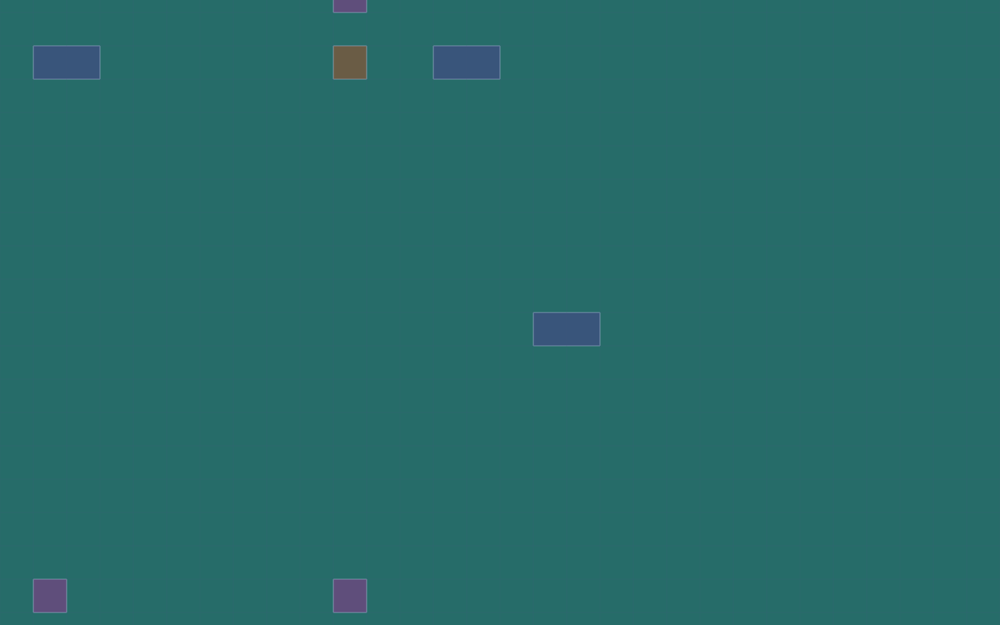
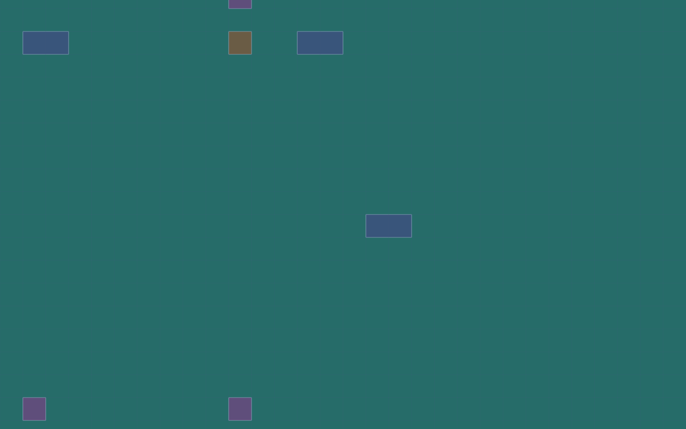
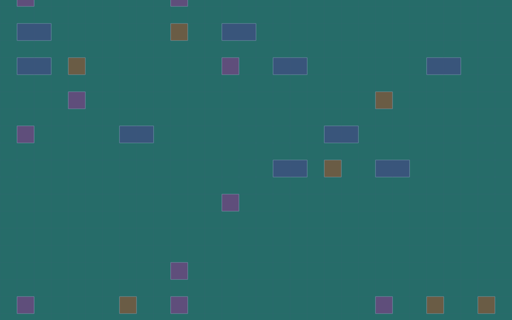
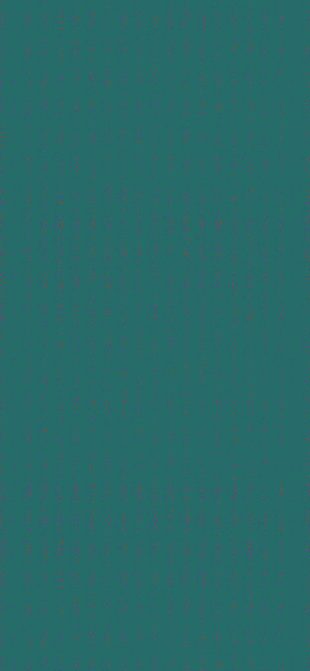
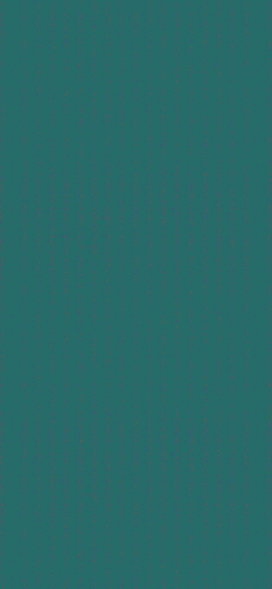
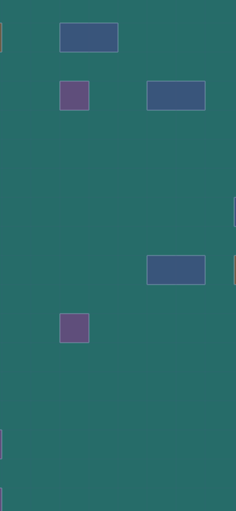
Fresh IC-root verification and genuine interpolated pieces. Every capture records PLAYING; these are separate live observations, not synthetic stress or before/after identical-state comparisons.
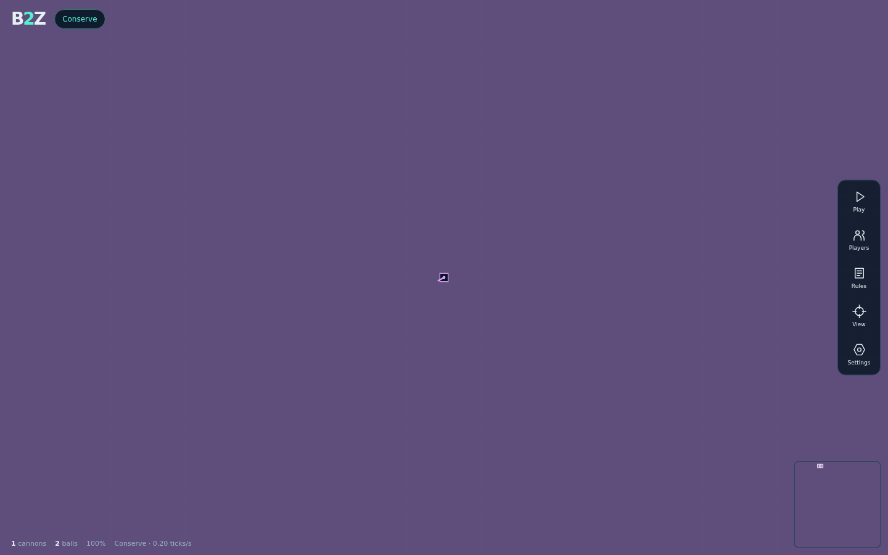
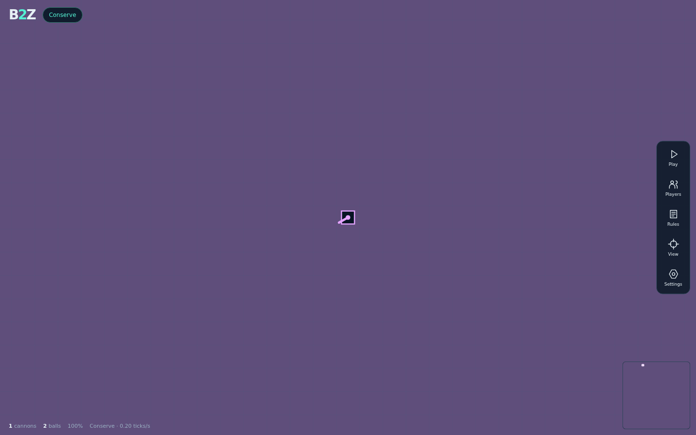
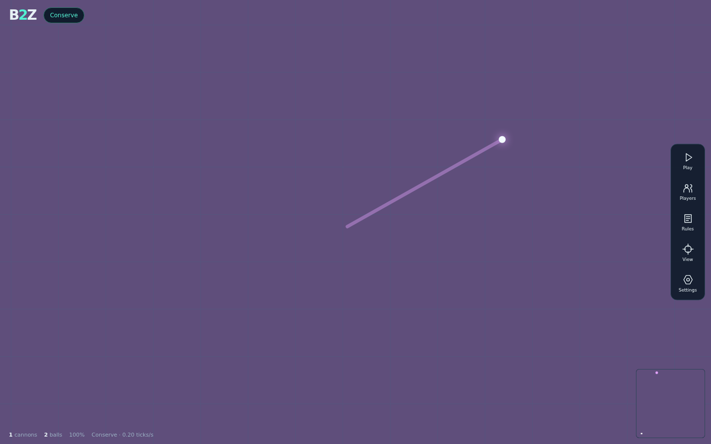
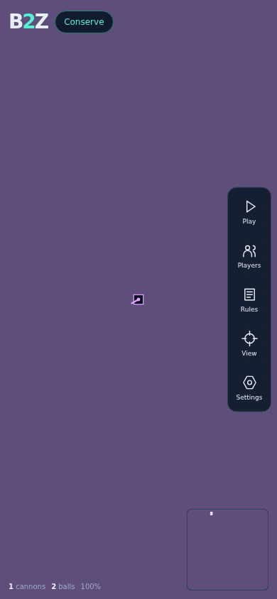
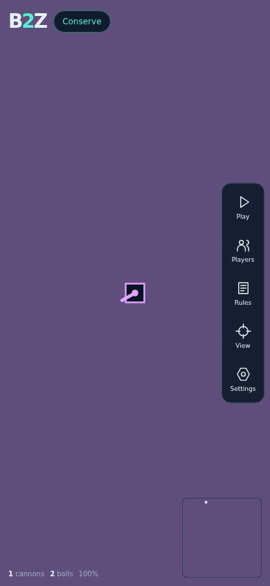
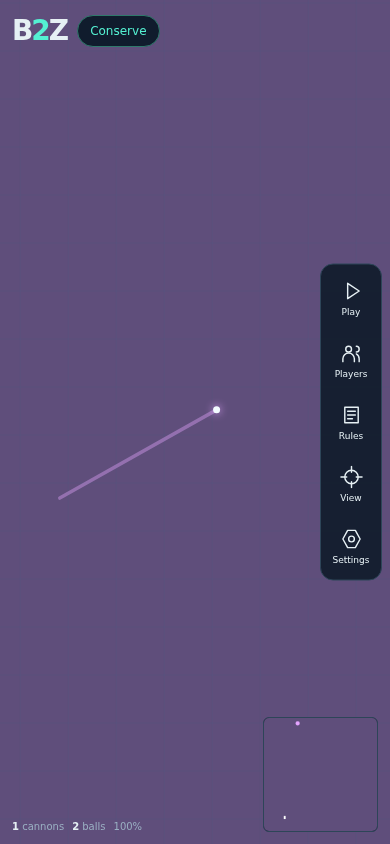
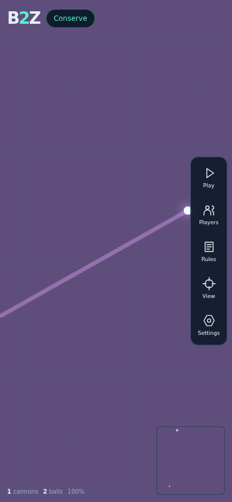